Layla Pro
Keep your prayers with you.
A prayer app for iPhone. Times drawn as the sun moves, a shield that holds your other apps while you pray, a year of prayer in 365 dots, a globe lit by everyone praying Tahajjud tonight, and friends who can see whether you prayed today. Built by one person, in the colours of the night.
iPhone · iOS 17 and later · Prayer times, the shield, streaks and Tahajjud are free for everyone.
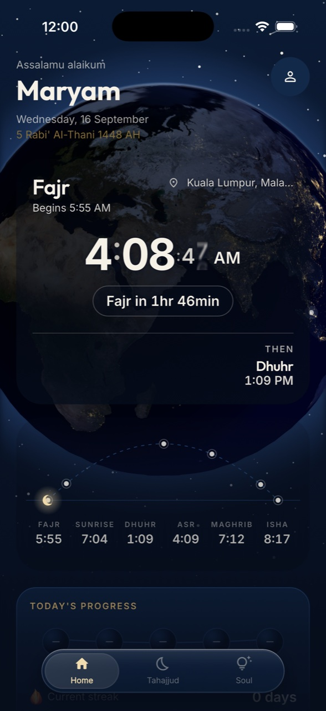
Prayer
The day, drawn as the sun actually moves.
Home opens on one arc from Fajr to Isha. The sun sits where it is right now, the next prayer is lit, and a countdown ticks underneath. Times are computed on your phone from your location and the calculation method you choose.
Prayer times, as an arc.
- Sunrise on the arc too, so you can see how long Fajr has left without doing the maths.
- Reminders that sound how you want. Adhan, chime, bell or soft, with minutes-before offsets per prayer. You hear each one before you pick it.
- Qibla from the same location, a compass that settles on the Kaaba.
A phone that waits for you to pray.
When a prayer comes in, Layla Pro can hold the apps you chose behind a Screen Time shield. Social feeds, games, whatever pulls at you. Calls, and Layla Pro itself, are never held, so the switch that turns the shield off is always reachable.
- Confirm with your prayer mat. Tap that you prayed, then point the camera at your mat. Layla Pro recognises it on the phone, marks the prayer, and the shield drops.
- Thirty minutes, then it lets go on its own. Prayed or not, the shield releases half an hour after the prayer begins. It is a nudge, not a cage.
- Only a confirmed prayer counts toward your streak. Nothing is inferred from movement or screen time.
A year of prayer, in one look.
Every day is a dot. Green for five confirmed, amber for a day still open, rose for a prayer missed. Tap any dot to see which prayers it holds; step back through past years with the arrows.
- Today's progress as beads on a string, one for each prayer, filled as you confirm.
- Current streak, longest streak, prayers confirmed, Tahajjud nights. Four numbers on your profile, counted for the year.
Tahajjud
You are not the only one awake.
Layla Pro divides the night from Maghrib to Fajr into thirds and lights the last one, because that is when Tahajjud is best. Tap "I am praying Tahajjud" and a small blue light appears on a globe of the Earth at night, where other lights are glowing too.
- Each glow is a five-kilometre area, never a person. Your exact location is never stored and never shared. A light stays for four hours, then fades on its own.
- The window is drawn, not listed. Maghrib, the start of the last third, Fajr, and a countdown to the one that matters next.
- Night stories. Leave a short line about your night for others to find, and read theirs.
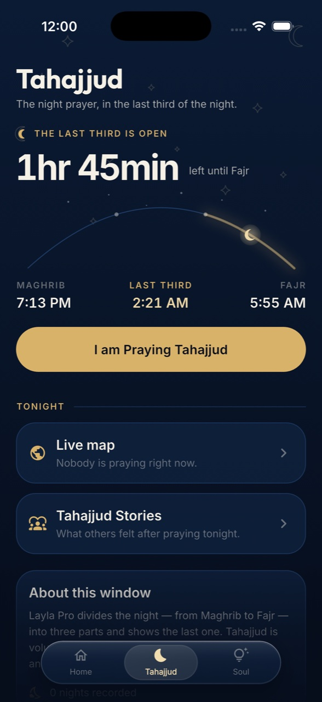
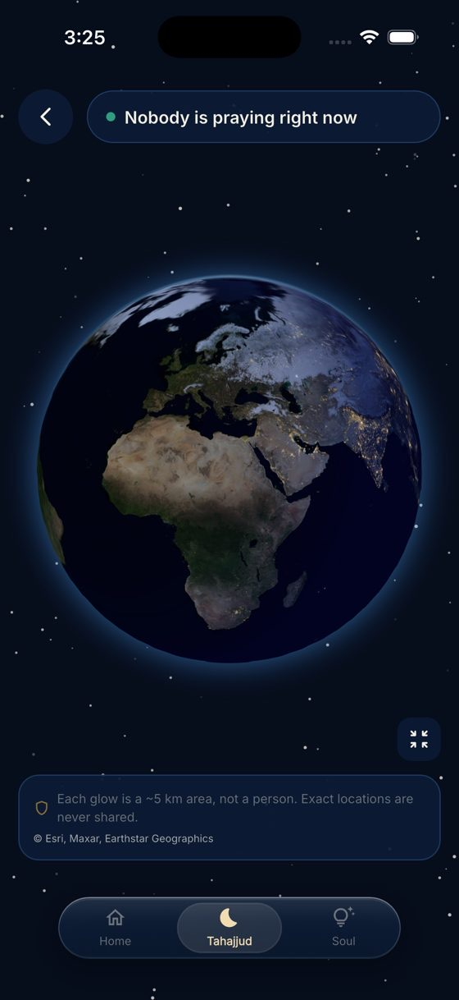
Friends
A code each. Then you can see whether the other one prayed today.
Your code is six letters and numbers. Share it, or send the link, and a friend appears on your screen with five dots, one for each prayer, filled as their day is prayed.
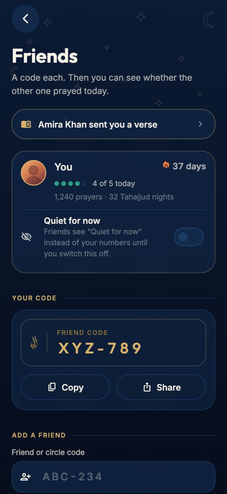
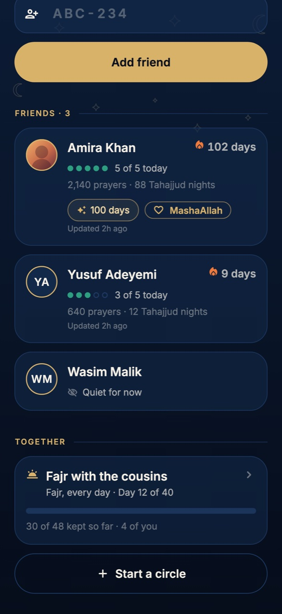
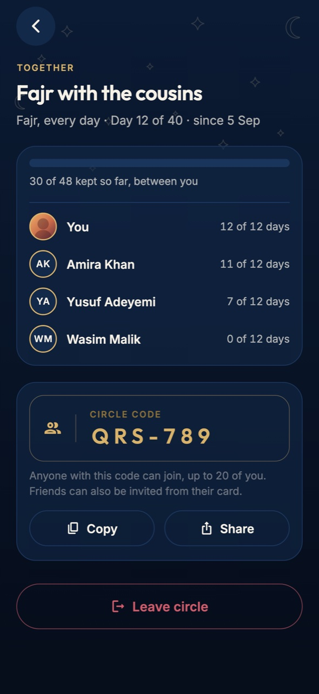
- Add by code or by link. The link opens straight into Layla Pro with the code filled in.
- Their day and their streak, and how many prayers and Tahajjud nights they have kept this year.
- MashaAllah on milestones. Six of them, and only six. Each sits on a friend's card for a week and invites one word.
- Send a verse. Any card you saved from Mood, or one chosen by how they might be feeling, straight to a friend.
- Jumu'ah: which masjid? Name yours for this Friday and see where friends are going. A masjid name is the only typed text that ever passes between you.
- Forty-day circles. Fajr every day, all five, or Tahajjud, kept with a few friends on one shared bar. Anyone with the circle code can join, up to twenty of you.
There is no leaderboard, on purpose. The moment the screen sorts people it becomes a competition, and that is the one thing a shared intention must not turn into. Nothing here is ranked. "Quiet for now" hides your numbers from every friend until you switch it off; they see those three words, not the count.
- 100days in a row
- 365days in a row
- 1,000prayers
- 5,000prayers
- 1stTahajjud night
- 100thTahajjud night
A profile, with a picture if you want one.
Your name, your four numbers for the year, and your settings. Add a picture from your library and crop it in the app; friends see it beside your dots.
- Photos are stripped before they are stored. The camera's metadata, the time it was taken and any GPS position are removed on your phone. Only the cropped picture is kept.
- Sign in, or don't. Prayer times, the shield, widgets and the streak work without an account. Sign in for friends, the globe and stories, and your streak comes with you.
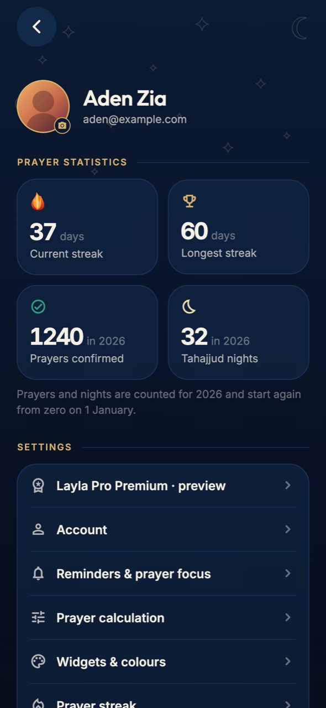
Soul
For the moments between the prayers.
The third tab is where the quiet work happens: dhikr, a verse for how you feel, the ninety-nine names, and duas with their sources.
Tasbih
Tap too fast and Layla Pro asks you to take your time. The count is identical in every style; only what your thumb is looking at changes.
Mood
Pick whatever is closest and turn a deck of verses and hadith chosen for it. Each verse is recited by Mishary Rashid Alafasy, and the recitation carries only the words on the card. Read why it fits, save it, share it, or send it to a friend.
Names of Allah
One of the ninety-nine each day, ٱلْحَقّ Al-Haqq, The Truth, with its meaning, where it appears, and a way to repeat it on the counter.
Duas
Morning, evening, travel, sleep and everything in between, from the Qur'an and Sunnah. Arabic, transliteration and meaning.
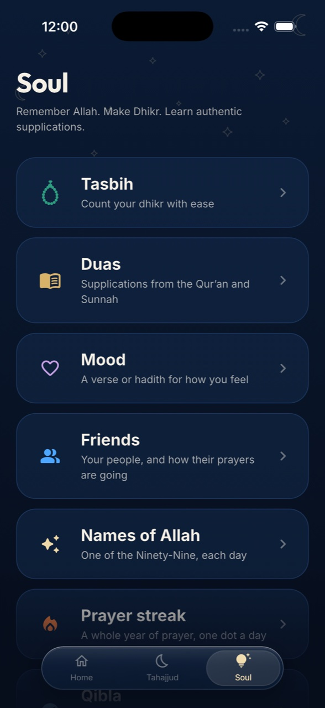
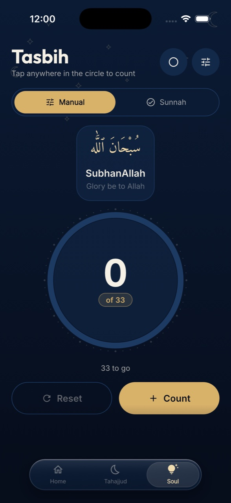
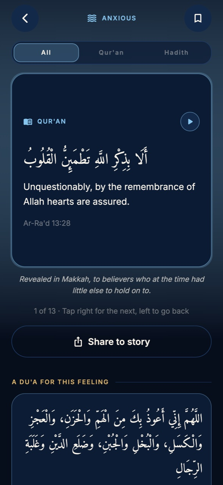
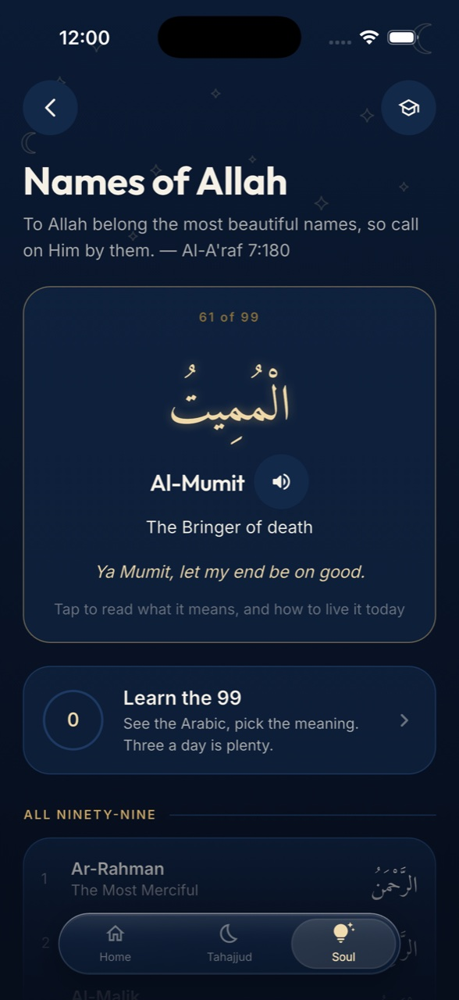
For sisters
If you chose "sister" when you set up the app, Layla Pro offers a prayer pause for the days of menstruation. While it is on, the days are simply not counted: nothing is recorded as missed, nothing is owed, and the streak carries on where it left off. Those days show as a neutral dash rather than a cross. The pause is never visible to friends or circles, and nothing about it is stored on their side. It is not shown to anyone who chose "brother".
Widgets & Live Activity
Your prayers, before you unlock.
Home screen widgets for the next prayer, the whole day, the arc, the tracker, the globe, the tasbih, a verse, the Qibla and duas. Lock screen widgets in three shapes. And when a prayer is close, a Live Activity takes the Dynamic Island and counts it down, then hands you the button to confirm.
- Nine colour sets. Midnight, Emerald, Rose, Ember, Violet, Ocean, Sapphire, Slate and Sand. Every widget follows one set; tap a stone and they redraw within a minute. The app itself stays in Midnight.
- The mark in the corner of every one, at eighteen points.
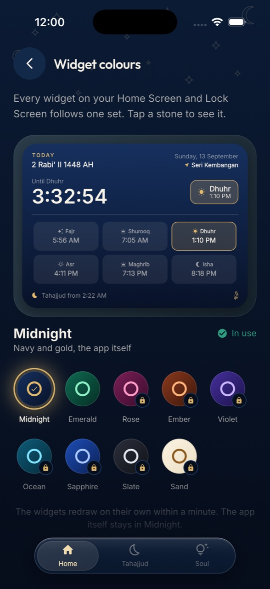
Privacy
What leaves your phone, and what never does.
- Prayer-mat photos never leave the phone. The camera looks at the mat on the device; no picture is uploaded or kept.
- Prayer times are computed on your phone. Your location is used there and nowhere else.
- On the globe, your location is a rough five-kilometre area, never a point, and it expires by itself after four hours.
- Friends see only what the app shows: five dots, a streak, this year's counts, a milestone, a verse you sent, and a masjid name for Friday. Nothing else is shared, and "Quiet for now" hides the numbers.
- The prayer pause is never shared. Not with friends, not with circles, not in any count.
- Profile photos are stripped of camera and GPS data before they are stored.
- Nothing is inferred. A prayer counts when you say it does.
On the App Store
Seven screens, as they appear on the store.
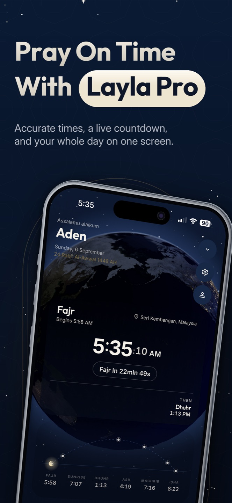
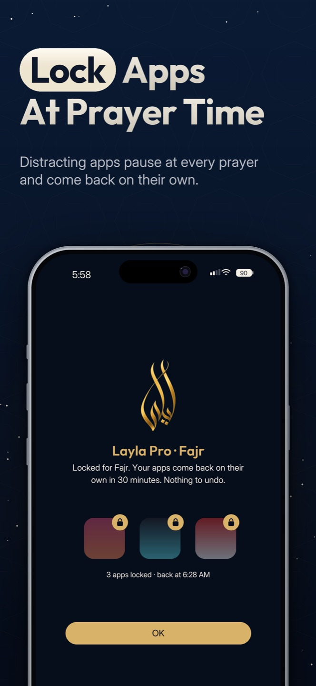
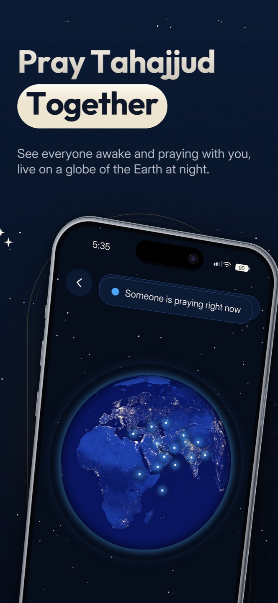
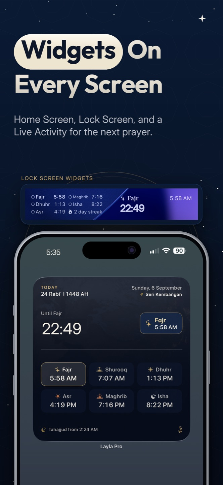
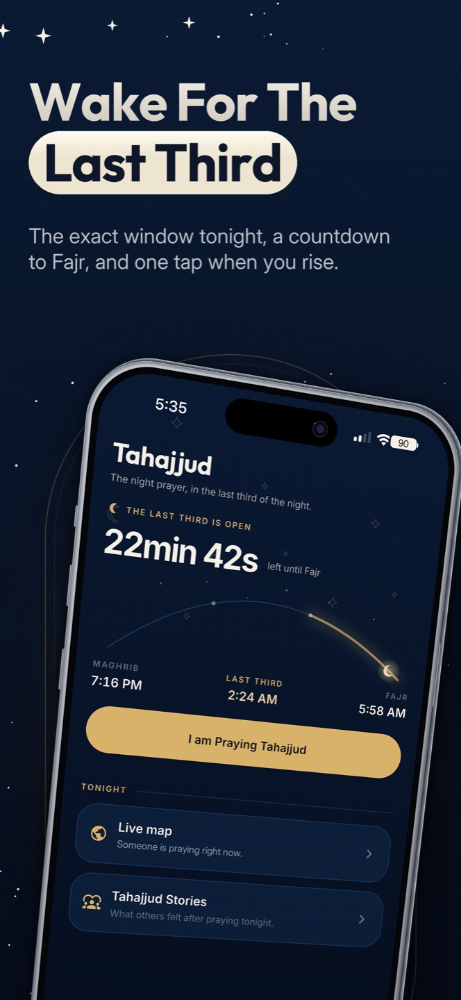
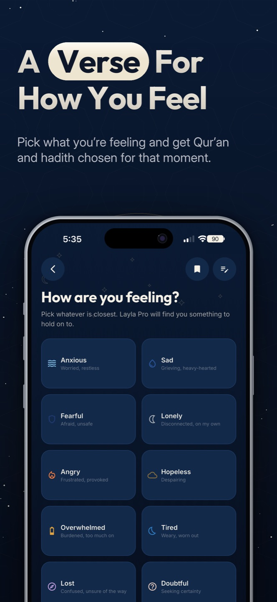
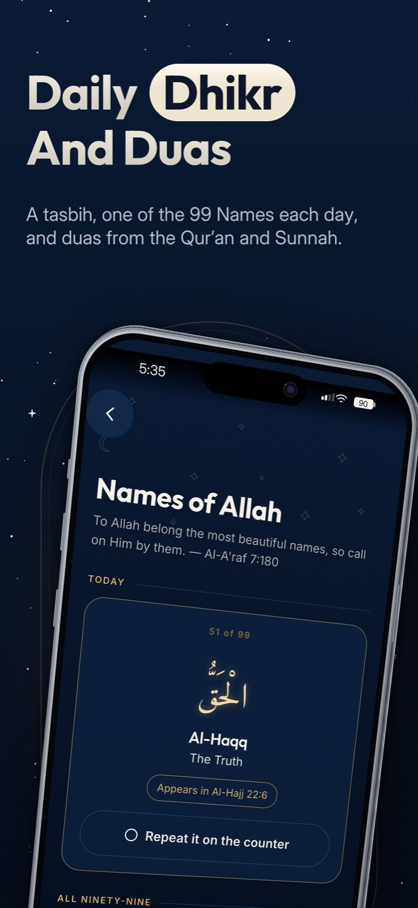
Keep your prayers with you.
Layla Pro is coming to the App Store for iPhone. The listing link will appear here the day it is live.